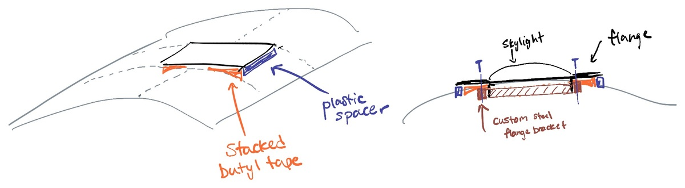
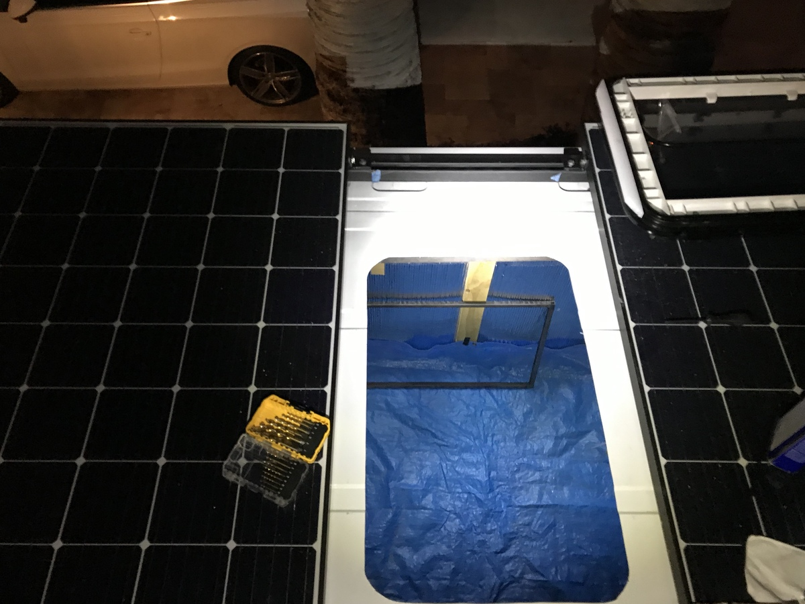
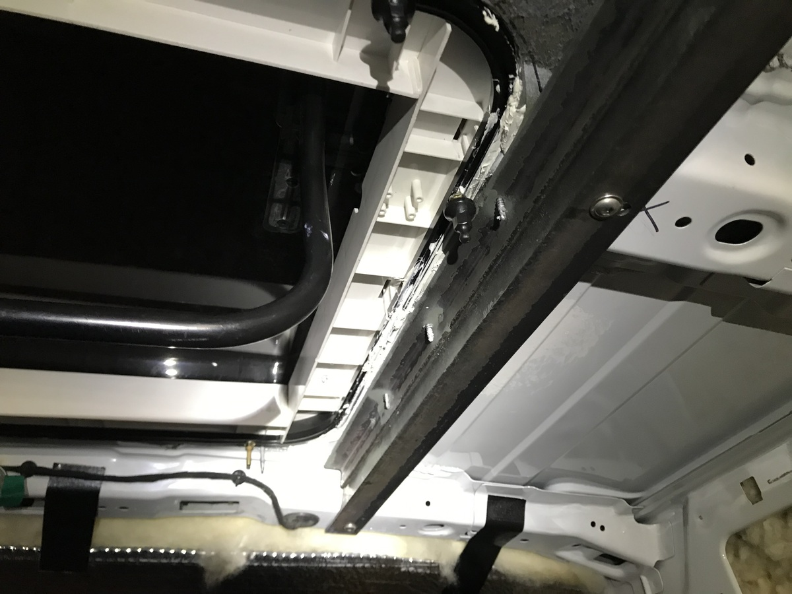
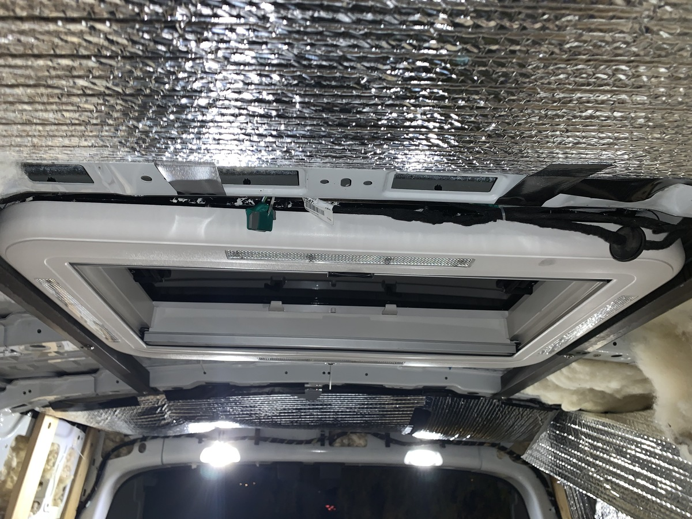
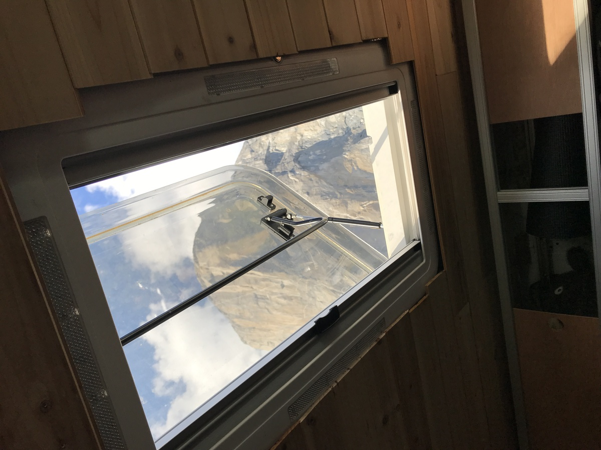
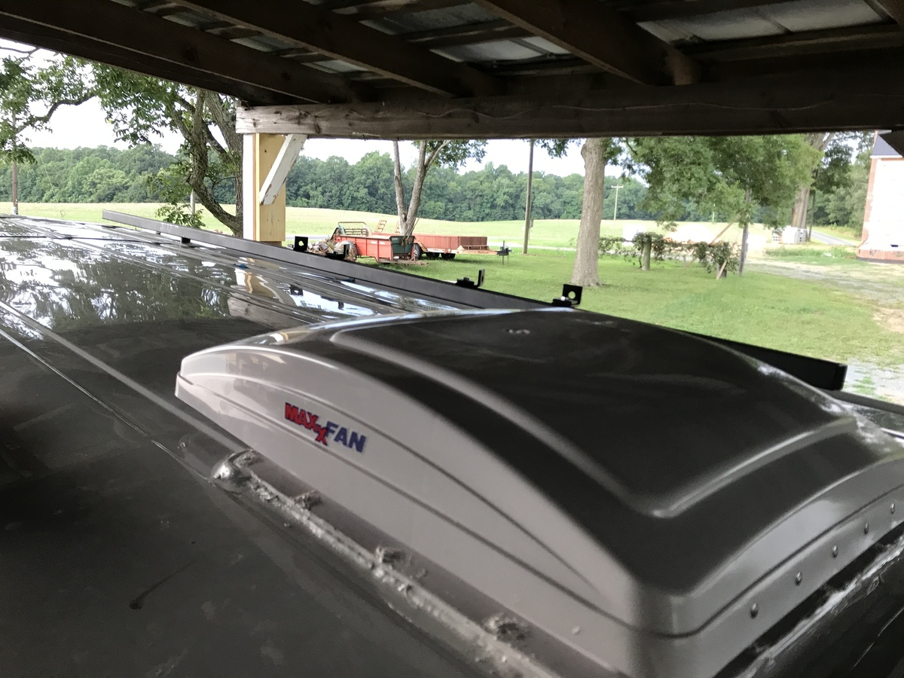

→ Skylight. Fan
Mfg. / Part #: Unknown Manufacturer Tags: window/fan
The skylight installation was tricky, but in the end worth it. Privacy is kept by not adding any windows in the rear, but light is allowed in via the skylight.
With the curvature of the roof not being flat and having to take out one of the frame support structures, installation was not a trivial task
Summary
- custom spacers were needed to deal with the curvature of the roof (simply made out of 3/4” HDPE and butyl tape)
- skylight flange was drilled and screwed through the van ceiling into a steel flange bracket backing on the other side
Design
The design was difficult due to the curvature of the roof, but this was solved by using plastic spacers on the left and right sides (purple below) and filling in the rest with butyl sealing tape (orange). The whole thing was sealed with commercial grade flashing tape - I found the 3M flashing tape to be the best, while the FlexSeal stuff that they sell at Home Depot/Lowes was totally useless - it cracked and came up within a few months.
Another issue was due to the location of the skylight, in the back, and between the panels, we had to remove one of the van’s structural cross supports. Talk about voiding any warranty. I reinforced this by connecting the remaining supports together with a transverse piece of angle steel, creating a rectangle around where the skylight would eventually go.



Installation
Steps
- Remove the ceiling cross support and reinforce with transverse beams
- Create custom flange bracket to attach the skylight through the roof
- Prep spacers
- Cut hole
- Position skylight, spacers and butyl tape → caulk and adhere
- Screw through the flange, adhesive and van ceiling (fill holes with caulk where necessary)
- Seal with flashing tape
Taking out the ceiling support (thanks for the tools and help Mike!)


Reinforcing with new transverse steel angle.


Framing and prepping

Make template and drill through

Cutting out the hole 
Installation

Mounting and filling in the spacers

Showing the sheet metal screws coming through the roof and the flange bracket.


Before final trim: 
Fan
Mfg. / Part #: MaxxAir MaxxFan Deluxe 7000K Tags: electrical
The MaxxAir MaxxFan is pretty standard on van builds - it can be used when it’s raining and is pretty powerful. Installation is pretty straightforward, but just like in the Skylight, I made a flange bracket (this time out of wood) so that there is more to screw into than just the thin sheet metal.

Next: Ceiling